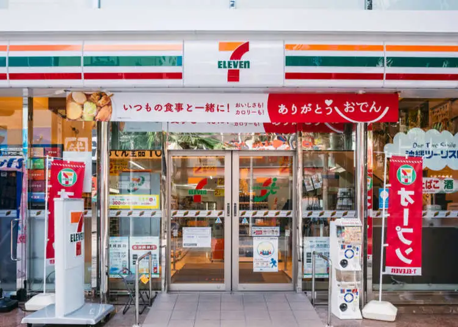

De eerste locatie waar wij eten hebben gehaald was natuurlijk het befaamde 7/11.
Het eten daar was verbazend lekker en super goedkoop ook. Perfect voor studenten dus.
Wat ik persoonlijk echt een aanrader vind zijn de smoothies.
je kan daar in de diepvries een bekertje met bevroren fruit halen en wanneer je die
afgerekent hebt is er naast de kassa een machine waar je het in legt, daar wordt de smoothie voor je neus gemaakt.
Mijn favoriete was de bosvruchten smoothie. omgerekend naar euro heb je een heerlijke smoothie voor maar 60 cent!
En al het andere eten was ook super goedkoop. Voor een heerlijk ontbijtje betaal je bij de 7/11 maximaal 6 euro per persoon.
En dan heb je super lekker en vers eten.
